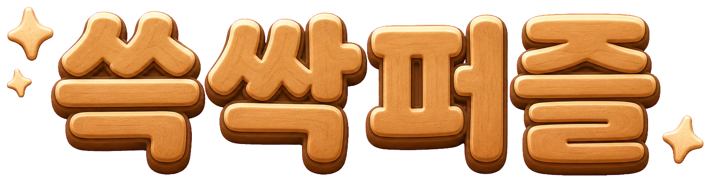

0:00
0
도움말
되돌리기
다시하기

무기력한 방 한 칸에서, 다시 세상 밖으로
시작하기
스테이지 선택
전체 이용가
스테이지
뒤로
계속
✨
깨끗해졌다!
다음 스테이지
스테이지 목록
😵💫
아직이야…
다시 하기
↩ 한 수 무르기
어떻게 하나요?
캐릭터를 움직여
모든 칸을 깨끗하게
만들면 클리어!
지나간 칸은 한 단계씩 닦여요.
이미 깨끗해진 칸은
다시 지나갈 수 없어요.
더러울수록 여러 번 지나가야 해요.
알겠어요
잠깐 쉬는 중
이어하기
처음부터
스테이지 목록
슥… 삭…